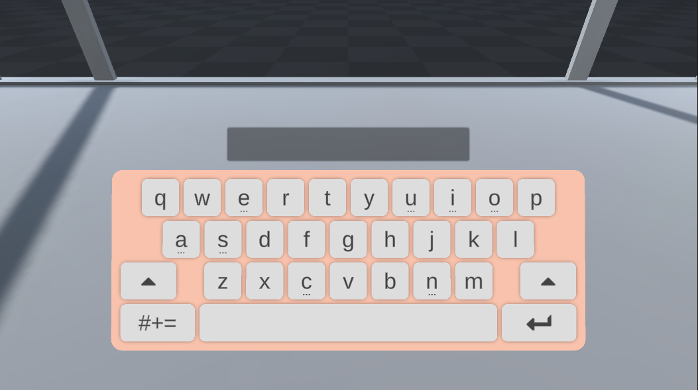
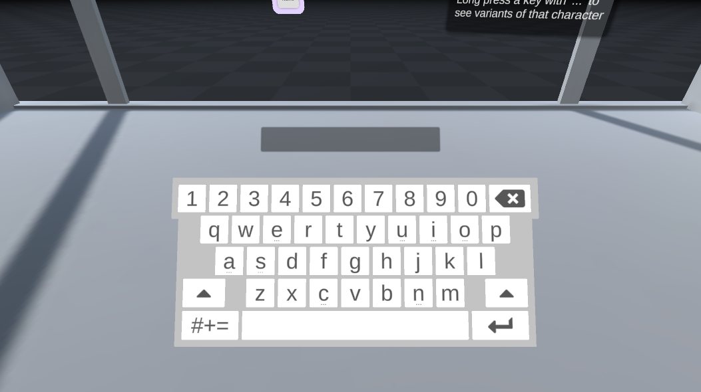
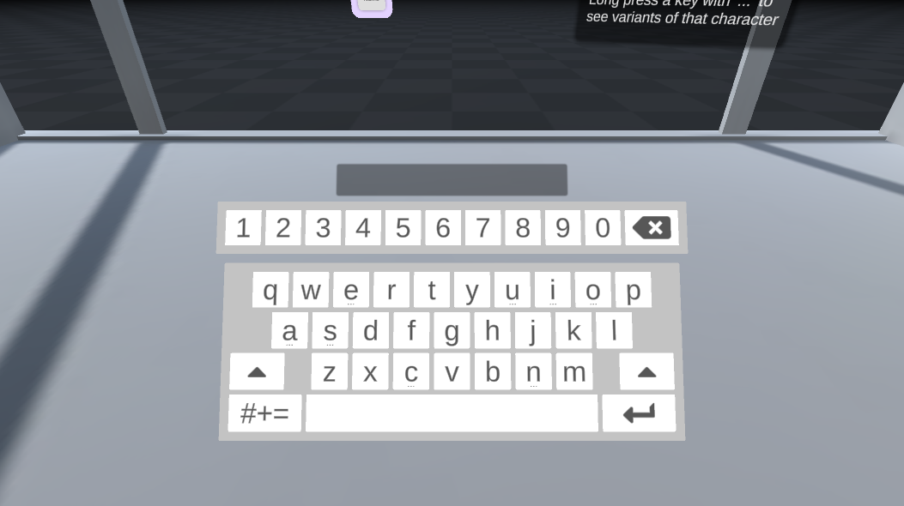

How To Use Our XR Keyboard For Unity
Pip Turner, Research and Development Engineer
Pete Nancollis, Senior Software Engineer
Our experimental XR keyboard is now open source and available to implement in your Unity projects!
Weve built a virtual keyboard thats robust and easy to use, even for untrained end users.
In this post we go behind the scenes of our design process, and take you through everything you need to add a keyboard to your XR creation in our howto guide and video tutorial. Get started with the keyboard at its github repo here.
What Have We Done?
Removing peripherals to achieve direct physical interaction in VR and AR is key to natural feeling input. But text entry is still a necessary part of any UI and a common point of frustration in VR. At some point users will need to quickly enter a password or a username without wanting to learn a whole new typing paradigm.
Taking inspiration from both the physical and digital world we wanted to create a solution that doesnt exist in either but retained the familiarity of both.
Weve built a keyboard prefab for Unity so you can design your own keyboard and have it work seamlessly with our hand tracking. It works on Orion (V4), Gemini (V5) and Hyperion (V6).
hat you get is a robust and reliable basic open source keyboard that retains excellent usability no matter what you do with it (and theres a lot you can do check out our examples).
How Did We Do It?
We knew the keyboard should feel great to use. It should be robust across use cases, with no learning curve, and require no excessive mental effort to use.
We started from the assumption that direct physical interaction is the best solution.
Familiarity with the physical world means no learning curve and no additional mental effort.
So we investigated what it takes to build a keyboard suitable for XR that feels as natural and easy to use as a physical keyboard.
We made a few initial assumptions:
We would stick to standard keyboard layouts to ensure a low barrier to entry for new users. For us that meant a QWERTY layout. But we kept in mind throughout that this wasnt the only layout that mattered.
We would avoid leaning on smartphone keyboard design paradigms. We wanted to ground the design in the real world as much as possible, and typing on a smartphone didnt feel real enough.
Were not expecting users to need to write long prose in VR. Everyday tasks might be things like logging into your account, entering search queries or typing your name. This means short strings and also, in the case of login screens, unpredictable sequences of characters.
The Key To Any Good Keyboard
Its essential to provide keys that feel great to use and work reliably. You should be able to turn your finger movements into text with minimal effort and frustration.
Turns out this was easier than we expected, thanks to the Interaction Engine and the included Interaction Button. This handy little component provided all the functionality we needed a virtual button that responds to your virtual hand in the way you would expect in the physical world. Simply press the button down with your finger to activate and release.

The humble interaction button in its natural habitat
Keystrokes: DownPush or UpRelease?
Initially when building these keys we activated the keystroke on the downpush. This gave the most responsive feel. Users didnt have to be too accurate about their hand movement to activate the keys as long as you press down on the right key it works.
Further down the line we realised we needed to handle long presses of keys (more on this later), so we moved to activating keystrokes when the key was released.
We expected this to be somewhat detrimental to the performance of the keyboard because you would need to be more careful about how you activate the key through press and release. But we were wrong. As long as you press down the key you intend, the Interaction Button allows for some movement of your finger after you press while still triggering a successful up event when you pull your finger away.
There are definitely faster ways of typing with your hands in VR, but it is unlikely that any of them will be as instantly usable as a traditional pushretract button.
Key activation on down vs up
Event Feedback
This style of button is great for a sense of familiarity, but the lack of haptic feedback limits the reliability of the interaction you cant feel the sensation of the key activating in the way you do with a physical keyboard.
Lack of physical feedback when using hand tracking is currently one of XRs biggest regressions from reality and a problem we are trying to remedy at Ultraleap. However, as contactless haptic systems arent widespread yet, this example relies on audiovisual feedback.
Our keys use both colour change and sounds to convey touch. This is one of the reasons activating on uprelease works so well because we still use an audio cue to let you know when the event takes place.
Refining the layout
Once we had our key, we needed a keyboard layout.
We had already decided to stick with a QWERTY style layout. We didnt want to completely reinvent text entry.
This still left a fair few design problems to tackle in order to provide the most comfortable and reliable interactions. For example, how should you enter numeric characters?
{kind=link}
Our keyboard, lacking a number row
The Number Row
Numeric characters are a very common feature of usernames and passwords, which are likely use cases for this type of keyboard.
The QWERTY layout only really helps us with where to place the characters of the alphabet. When it comes to number keys there are several potential solutions to choose from.
Traditional physical keyboards often feature a horizontal row of numbers across the top, but many also offer a number pad to the side. We explored both options to see which would perform best in VR.
We felt that the number pad to the side of the keyboard might offer some benefits in terms of reliability and speed of entry, just like it does on a physical keyboard. But in practice it felt cumbersome to use and was prone to error. This was down to the increased width of the keyboard you had to turn your head before reaching out with your hand. On the face of it, this doesnt sound too bad, but in practice turning felt awful!
Typing on a keyboard is a highprecision task that requires a high level of situational awareness so turning is a problem. It causes a huge context switch and ruins flow.
Once youve turned, you need to first reorient yourself, and then search through the keys on the number pad to find the key you were looking for as you recalibrate your movement to fit the new arrangement. This is slow and increases errors.
Even a fun animated pull out effect couldnt save the number pad from feeling too wide
So, we needed a new solution that doesnt need you to turn, and doesnt cause a context switch.
Enterthe number row!
Located above the existing QWERTY panel, this sits within your field of view when looking at the centre of the keyboard. Its easy to reach with a small hand movement. Placing it here immediately felt natural and keeps you in your flow no turning required.
We did find that the addition of another row of keys felt somewhat overwhelming. A lot of keys all on the same panel resulted in a layout that felt crowded and hard to focus on. To solve this, we detached the number row from the keyboard so that it floats just above the first row.
This subtle design change had a big impact. It created a sense of space, kept the row distinct from the alphabetical characters, and made it easier to take in all the information at a glance.
|  |  |
When placed close to the alphabetical characters the numbers are hard to differentiate, so it feels cluttered |
When spaced apart it feels less cluttered and its easier to distinguish the numbers from the alphabetical characters |
The number row in action
Accessing the Accents Panel
We wanted to design for the untrained user every step of the way. This didnt make life easy for us, but time and again we kept running into the same solutions:
Start from a place of familiarity
Ensure that the action doesnt create a context shift and detracts as little as possible from the users state of flow
A particular challenge was to make this keyboard usable for everyone, not just English speakers. We needed a way of adding characters with diacritics (e.g. letters with accents or umlauts above them). By applying these principles we created an easyaccess accent panel.
We identified 34 extra characters we wanted to add definitely too many to simply add on an extra row and hope for the best! So we followed our now triedandtested process:
Start from a place of familiarity
Physical keyboards offer poor implementations of diacritics, often relying on hidden keycodes which can be complex and hard to memorise (e.g. alt+0232). But smartphone implementation is much more elegant long pressing a key to activate an accent panel.
We had initially wanted to avoid smartphone keyboard design, but it seemed the most familiar design that wasnt a physical keyboard.
Immediately after implementing long press, it felt completely familiar. Like a natural part of our keyboard.
But we were still left with where to place our accent panel after the longpress enter step two:
Ensure that the action doesnt create a context shift and detracts as little as possible from the users state of flow
We had a few potential solutions for placing the accent row:
Temporarily replacing the number row
Floating above the centre of the keyboard
Floating near the longpressed key
Of these prototypes, the last fulfilled our criteria the best.
By placing the accent panel near to the longpressed key you are already looking in the right location, and your fingers are already close enough to reach out and press the key you want. This feels effortless and avoids context switching.
Appearing in place of the number row |
Appearing above the centre of the keyboard |
Appearing near the longpressed key |
[Alt]ernate Keyboards
So now weve got a keyboard that enables direct physical interaction, feels great, is familiar, reliable and has littletono learning curve.
The next challenge was to make it easy to customize.
Our keyboard uses the QWERTY layout, but we were very aware thats not at all the only way to lay out a keyboard. We wanted the flexibility to provide support for a range of layouts and a wide variety of keyboards.
Our final system allows you to define individual keymaps for both the alphanumeric and symbols panel. These can be edited to come up with different layouts (for example, its very quick to create a new keymap with an AZERTY layout).
You then use this keymap, combined with a key prefab (made up of visuals + InteractionButton + TextInputButton) to generate your keyboard.
You can also build on this prefab for an infinite variety of keyboards. Read the README.md for how to do this!
Weve had a huge amount of fun exploring some bespoke solutions:
Hand Attached Keyboards |
Confetti Keyboard |
PacMan Keyboard |
Rainbow Emoji Keyboards |
FrogBoard |
Calculator Watch Keyboard |
How-To Guide
Ready to dive in? Get started with the keyboard at its github repo here.
What you need:
Our latest Unity Modules Package (including our Core Unity Module and Interaction Engine)
The XR Keyboard was built with Unity 2019.4.18f1 and Leap Motion Unity Modules 4.8.0.
Set Up Your Keyboard In Four Steps:
Ensure you have Leap and the Interaction Engine set up in your scene
Place the
QwertyKeyboardprefab into the sceneSet Up Input Fields. Add
TMPInputFieldTextReceiverto any text fields you want the keyboard to input to (note: only compatible with TextMeshPro InputFields)Check it works and start customizing!
Customisation
The keyboard is an editable set of panels defined by prefabs and keymaps. There are two main panels Alphanumeric and Symbols. Each panel is defined by a keymap, a prefab for the key, and a prefab for the keys shadow.
These two panels can be found here:
QwertyKeyboard/Parent/AlphaNumericPanel
QwertyKeyboard/Parent/SymbolsPanel
Most of the customization for each panel can be done on the DefaultKey prefab. Here you can change the following:
Image used for the key
Text Mesh
Interaction Button colour (
SimpleInteractionGlowImage)Interaction Glow colour (
SimpleInteractionGlowImage)Sound Effects (
InteractionButtonSounds)
You can also change the shadow design by changing the DefaultShadow prefab.
Once you are happy with your new design, select your panel and press Regenerate Keyboard. This will generate a new keyboard panel prefab with your new design. You can overwrite the current keyboard prefab youre working on by setting the Over Write Prefab option to true.
If you choose to use a new key or shadow prefab, you must update the prefab fields on the AlphaNumeric, Symbols and AccentKeys panels to reference your new prefab.
Key, panel, and gap size can be changed on the UI Keyboard Resizer component on your panel. Use this tool to set the default size of keys and panels independently of the scale of the gameobject. Change the values on this object and press Resize Keyboard to apply your changes.
Note
Pressing Regenerate Keyboard on the Key Map Generator also triggers the Resize Keyboard function.
For more details, including how to generate new keyboard prefabs and keymaps, check out the readme.
Conclusion
The purpose of our keyboard is to enable untrained users to enter short strings like usernames, passwords, and email addresses.
Weve honed the keyboard so that users arent faced with a huge learning curve, but can interact directly and intuitively.
The keyboard is optimized for ease of use rather than speed, so weve avoided the need for heavyduty solutions such as predictive AI or tracked hardware. This focus on simplicity means that its practical and easy to implement in Unity.
Tap into your creativity. We cant wait to see what keyboards you make!
Want to stay in the loop on the latest Ultraleap updates? Sign up to our newsletter here.
We welcome feedback on our products and services. Check out our support centre or contact us.
The Small Print
XR Keyboard is licensed under Apache 2.0 XR Keyboard is not actively maintained or managed, and provided as is. Changes and fixes have no ETA. XR Keyboard was built with 2019.4.18f1 & Leap Motion Unity Modules 4.8.0. We cannot guarantee that it will work with other versions of the modules or Unity. XR Keyboard includes audio from two soundpacks sourced from kenney.nl. Both soundpacks are licensed under the CC0 1.0 Universal Licence.